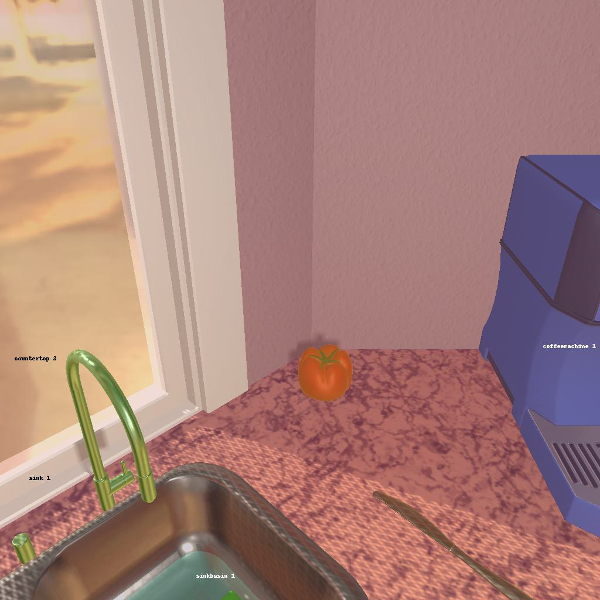

---------------------------------------------------------task: 19---------------------------------------------------------
--------------------------------------------------------------------------------------------------------------------------------------------------------------------
--------------------------------------------------------------------------------------------------------------------------------------------------------------------
Step:--------------------------------------------------------------------------1-------------------------------------------------------------------------------
----------------------------------------
VLM Prompt:
Image1:
**Instruction**
1. Analyze the provided image to identify all visible household objects, focusing on those relevant to the task description "put a cool tomato in microwave."
2. Use the analysis of the image and the task hint "The agent must find an object of the desired type, pick it up, go to a fridge, cool the object with the fridge, then find the correct location to place it, and put it down there. The agent does not need to use the fridge button or open the fridge to cool the object, and the agent just needs to do action that is "cool the object with the fridge"." to answer the question: what is the most reasonable action in the choices for the task description "put a cool tomato in microwave"?
4. Decide and write the answer using the template: The answer is: (i): , where i is the real number. If there is no desired object in the image, search every place based on **Initial Observation** to find the object. And if no one is exactly correct, choose a similar answer.
**Initial Observation**
You are in the middle of a room. Looking quickly around you, you can see cabinet (1-15), fridge (1), countertop (1-4), drawer (1-4), microwave (1), toaster (1), coffeemachine (1), garbagecan (1), sink (1), stoveburner (1-3), sinkbasin (1)
**Answer Choices**
(1): go to cabinet 1
(2): go to cabinet 2
(3): go to cabinet 3
(4): go to fridge 1
(5): go to countertop 1
(6): go to cabinet 4
(7): go to cabinet 5
(8): go to cabinet 6
(9): go to cabinet 7
(10): go to drawer 1
(11): go to drawer 2
(12): go to cabinet 8
(13): go to drawer 3
(14): go to cabinet 9
(15): go to cabinet 10
(16): go to drawer 4
(17): go to microwave 1
(18): go to cabinet 11
(19): go to toaster 1
(20): go to cabinet 12
(21): go to cabinet 13
(22): go to cabinet 14
(23): go to cabinet 15
(24): go to countertop 2
(25): go to coffeemachine 1
(26): go to garbagecan 1
(27): go to countertop 3
(28): go to countertop 4
(29): go to sink 1
(30): go to stoveburner 1
(31): go to stoveburner 2
(32): go to stoveburner 3
(33): go to sinkbasin 1
**Answer**
Let's think step by step by following the instructions.
----------------------------------------
----------------------------------------
Original Response:
The task is to put a cool tomato in the microwave. In the image, we can see a tomato on the countertop 2 and a microwave is mentioned in the initial observation. There is no fridge visible in the image, but it is mentioned in the initial observation. According to the task hint, the agent does not need to interact with the fridge button or open the fridge to cool the object; they simply need to perform an action that is "cool the object with the fridge."
Based on the information provided, the most reasonable action is to go to the fridge to cool the tomato, and then go to the microwave to complete the task of putting a cool tomato in it.
The answer is: (4): go to fridge 1
----------------------------------------
----------------------------------------
>>> Refine Original VLM Response and Get Pure Action: go to fridge 1
----------------------------------------
-----------------------------------------------------------------
Running time: 18.382878065109253 seconds
Total Money: 6.576050000000003
-----------------------------------------------------------------
-----------------------------------------------------------------
Text Observation:You arrive at loc 3. The fridge 1 is closed.
-----------------------------------------------------------------
UNSUCCEED